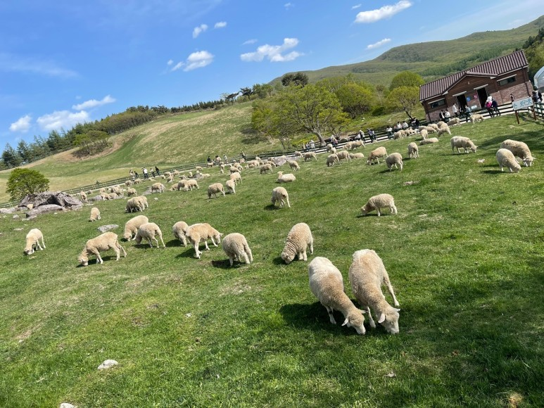

양떼 목장은 워낙 유명해서 가고 싶었는데 기회가 되어서 남자친구와 함께 다녀왔습니다! 다행히 날씨가 여행 내내 좋아서 양떼목장 방문 하는 날에도 날씨가 굉장히 좋았습니다! 주차장에 차를 세웠는데 주차비가 든다고 하더라구요??? 다행히 나가기 전에 매점에 들리면 주차비가 무료입니다!! 원래 무료로 해줘야 하지 않나 생각이 들었어요.. 20분 내로 나가면 무료라고 하니 참고하세요!! 양떼 목장에 도착해서 산책로 지도를 살펴봤는데 날짜마다 날씨마다 양들을 방목하는 곳이 다른것 같더라구요! 
오늘의 방목 구역으로 표시된곳으로 가면 양떼들을 볼수 있어요! 한곳에만 몰려있어서 다소 실망하긴 했지만 열심히 양들을 보러 갔습니다!! 입장권을 구매하게 되면 건초 교환권을 주는데요! 양들에게 건초를 줄수 있는 체험을 무료로 할수있어요!! 주차비에 이어서 이거까지 돈받는다고 하면 많은분들이 뭐라 하실꺼 같아요 ㅠㅠㅠ 체험 할수 있어서 좋은것 같습니다! 저는 겁이 많아서 무서웠지만 아이들이 너무 좋아할것 같아요!! 양떼들이 쭈욱 보였어요! 방목 구역에만 몰려있지만 이렇게 많은 양들을 본적이 없어서 신기하고 너무 귀여웠습니다 !! 양들이 풀만 먹느라 고개는 들지 않고 계속 먹더라구요 ... ㅎㅎㅎ
직접 만지거나 들어가지는 못하고 사다리 밖에서 구경만 가능합니다!! 건초는 여기있는 양들한테는 주면 안된다고해요! 목이 마를 수가 있어서 안에 관리하는 양들한테만 줄수 있으니 참고하세용!여행오신 분들도 굉장히 많았어요! 가족,연인,친구 등 다양하게 오셨더라구요~~ 그림 같은 풍경이에요~~ 푸른 하늘과 초록초록 잔디가 정말 힐링이 되었어요!! 날씨가 더웠는데 올라가니 춥더라구요!! 아직은 쌀쌀합니당! 공기가 좋아서 너무 좋았어요~~ 양들이 게속 우는데 귀여웠어요!